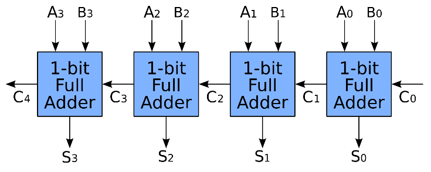

Introduction to Brent–Kung adder
Introdution
這篇文章會以數學的推導介紹現行計算機結構當中主流加法器Brent–Kung adder，以巧妙的電路架構設計(Architecture)可以將原本時間複雜度$O(N)$的Ripple-carry adder優化為$O(logN)$。
74181 integrated circuit, an early four-bit ALU
Prior knowledge: Logic Circuit Design, VLSI
Overview of adder
加法器就是可以將輸入的兩個二進位的$n$ bit做加法並輸出和(sum)，是硬體當中最基本的結構，而同樣是能完成加法這個操作的加法器又區分成：
半加器 (Half adder)
全加器 (Full adder)
漣波加法器 (RCA , Ripple-carry adder)
Carry-lookahead adder / Carry skip adder / Carry-save adder
Parallel prefix adders (PPA) : Kogge–Stone adder / Brent–Kung adder

在這當中運算速度最慢的$n$ bit全加器為RCA，因此第$i$位元的sum需等待前位元的進位($c_{i-1}$)才能做計算，因此$n$bit 的複雜度即為$O(n)$。
後來有將$n$ bit拆成4 bit (8bit) 一組做計算的CLA,CSA等也只能做$O(\sqrt{n})$等級的優化。後來工程師及數學家們研究出了一群最快的加法器家族，Parallel prefix adder，n位元的sum可以同時平行運算，
因此有效的降低時間複雜度。以現行的64bit位元電腦，PPA 速度就比RCA快上了$\frac{64}{log_264}=10$倍！可以想像如果現在的電腦如果是用RCA架構，所有的執行運算都要多花上10倍的時間呢！
已經簡單回顧了一下加法器的族群，以及各個加法器的複雜度後，現在開始介紹PPA 的架構，看完以下的推導就可以知道多位元的加法是如何做到平行運算以及$O(logN)$的複雜度。
Derivation of Prefix Parallel adder
現在假設有$n$ bit的兩個數字要做加法，
\[N_1=a_n a_{n-1} a_{n-2} \ldots a_1 a_0 \]
\[N_2=b_n b_{n-1} b_{n-2} \ldots b_1 b_0 \]
加法的方式就如一般從低位數做加減後往更高的位數做進位(carry)，位元的運算就如一般的full adder由真值表可以得到，而相對應的Full adder邏輯閘也可以繪製成右圖的樣子。
然而現在我們不再使用Full adder的邏輯架構，因為用這樣兜下去的加法器在怎麼做都會遭遇到carry 計算的延遲，例如RCA, CLA, CSA
因此為了根除carry的延遲，現在大破大立，將原本邏輯運算的sum 和carry重新組合，寫出一個新的等效邏輯運算式子，這樣或許才有機會能改善carry delay的problem以達到更好的performance。
那現在我們先由sum of product 可以寫出第$i$位元的$c_i$可以表達成以下關係式子
\[c_i=a_i b_i+b_i c_{i-1}+a_i c_{i-1} \]
而第$i$位的sum($s_i$) 可以由觀察發現只有在$a_i,b_i,c_{i-1}$三個位元恰巧有奇數個1時才會得到1，因此用XOR表示
\[s_i=a_i \oplus b_i \oplus c_{i-1} \]
現在針對$c_i$做一些邏輯上的化簡(這邊看起來有點不必要，但是看到後面就會發現這個做法可以簡化運算)
\[c_i=a_i b_i+b_i c_{i-1}\left(a_i+\bar{a}_{\imath}\right)+a_i c_{i-1}\left(b_i+\bar{b}_{\imath}\right) \]
展開以後得到
\[c_i=a_i b_i+a_i b_i c_{i-1}+\bar{a}_i b_i c_{i-1}+a_i b_i c_{i-1}+a_i \overline{b_l} c_{i-1} \]
其中第一、二項、四項是相同的可以化簡為一項
\[c_i=a_i b_i+c_{i-1}\left(a_i \bar{b}_{\imath}+\bar{a}_{\imath} b_i\right)=a_i b_i+c_{i-1}\left(a_i \oplus b_i\right) \]
因此我們成功得到每一位元的carry以及sum可以表示成以下邏輯，可以觀察到$a_i$與$b_i$在XOR的邏輯運算是可以共用的，可以省去重複計算的地方。
\[c_i=a_i b_i+c_{i-1}\left(a_i \oplus b_i\right) \]
\[s_i=a_i \oplus b_i \oplus c_{i-1} \]
為了善用以上的觀察，我們現在define (PG analysis)，可以讓整個計算過程變得更加有條有理。
\[p_i=a_i \oplus b_i \]
\[g_i=a_i b_i \]
則原本$c_i$、$s_i$的邏輯可以改寫成
\[s_i=p_i \oplus c_{i-1} \]
\[c_i=g_i+p_i c_{i-1} \]
$a_{i} \oplus b_{i} $代號之所以以$p_i$取代為propagation的縮寫，$a_ib_i$的以$g_i$簡稱為generation的簡寫，以訊號傳遞的角度解釋
(有興趣得可以去查pg analysis 也是個不錯的理解方法)
現在我們經過一番簡化，得到比較有效率的full adder表示後，若是要計算第$i$位元的sum($s_i$)需要等$c_{i-1}$的訊號stable後才能得到正確的值，
此問題即為ripple carry adder遇到的困境，使得N bit的位元相加複雜度為$O(n)$，若是我們可以把$c_{i-1}$做展開會發現其實$c_{i-1}$亦可表示
成$a_i,b_i,a_{i-1},b_{i-1}…$的邏輯運算，因此在$a_i ,b_i$同時進到加法器時就可以同時做運算，不必等到進位的delay。有了這樣的理解我們用
剛剛表示的$c_i$,$s_i$帶入$i=0,1,2,3…$展開看看
\[c_i=g_i+p_i c_{i-1}\]
Expansion of $c_i, i=1,2,3,4$
$i=0$ (無$c_{-1}$)
\[c_0=g_0 \]
$i=1$
\[c_1=g_1+p_1 c_o \]
$i=2$
\[c_2=g_2+p_2 c_1=g_2+p_2\left(g_1+p_1 c_0\right) \]
\[ =g_2+p_2 g_1+p_1 p_2 c_0 \]
$i=3$
\[c_3=g_3+p_3 c_2=g_3+p_3\left(g_2+p_2 g_1+p_1 p_2 c_0\right) \]
\[ =g_3+p_3 g_2+p_3 p_2 g_1+p_3 p_2 p_1 c_0 \]
$i=4$
\[c_4=g_4+p_4 c_3=g_4+p_4\left(g_3+p_3 g_2+p_3 p_2 g_1+p_3 p_2 p_1 c_0\right) \]
\[=g_4+p_4 g_3+p_4 p_3 g_2+p_4 p_3 p_2 g_1+p_4 p_3 p_2 p_1 c_0 \]
展開以後可以發現若是想做平行運算，想要避免gate delay，而展開$c_4$(以i=4為例)會得到非常多項，這將使得加法器所需的邏輯閘數量即高，不符合效益，
此外像是這種多input 的and gate($p_4 p_3 p_2 p_1 c_0$)運算其logic effort將會十分大，光運算的時間可能就比原本的carry ripple adder 的delay
來的更久了，那還能怎麼優化呢?
Key of Parallel Calculation : The Operand ∘
因此我們現在定義一個operator : $ \circ $ (我也不知道怎麼念XD) 他將在這樣的運算具備實用的性質，能簡化我們$c_4$展開來又臭又長的邏輯運算並成功做到平行運算的效果
Define Operand
現在定義一運算子
\[(g, p) \circ\left(g^{\prime}, p^{\prime}\right)=\left(g+\left(p g^{\prime}\right), p p^{\prime}\right) \]
Carry 的拆解
舉例來說$c_3$可以被拆解成兩個部分
\[c_3=\left(g_3+p_3 g_2+p_3 p_2 g_1\right)+\left(p_3 p_2 p_1 c_0\right) \]
當中的兩項可以看成
\[g_3+p_3 g_2+p_3 p_2 g_1=G_{3: 0} \]
\[p_3 p_2 p_1 c_0=P_{3: 0} \]
Law1 : Operator Calculation
現在試試看將$(g_4,p_4)$與$c_3$當中訊號的兩個部分$G_{3:0},P_{3:0}$做 ∘ 運算 (記得 $g_4=a_4 b_4 ,p_4=a_4\oplus b_4 $)
\[\left(g_4, p_4\right) \circ\left(G_{3: 0}, P_{3: 0}\right)=\left(g_4+\left(p_4 G_{3: 0}\right), p_4 P_{3: 0}\right)=\left(g_4+p_4\left(g_3+p_3 g_2+p_3 p_2 g_1\right), p_4 p_3 p_2 p_1 c_0\right) \]
\[=\left(g_4+p_4 g_3+p_4 p_3 g_2+p_4 p_3 p_2 g_1, p_4 p_3 p_2 p_1 c_0\right)=\left(G_{4: 0}, P_{4: 0}\right) \]
因此現在有
\[\left(G_{i: 0}, P_{i: 0}\right)=\left(g_i, p_i\right) \circ\left(G_{i-1: 0}, P_{i-1: 0}\right) \]
然而我們事實上可以對$G_{i-1:0},P_{i-1:0}$一直往下展開
\[\left(G_{i-1: 0}, P_{i-1: 0}\right)=\left(g_{i-1}, p_{i-1}\right) \circ\left(G_{i-2: 0}, P_{i-2: 0}\right) \]
\[=\left(g_{i-1}, p_{i-1}\right) \circ\left(g_{i-2}, p_{i-2}\right) \circ \ldots \circ\left(g_1, p_1\right) \]
Law2 : Associative property
現在證明operator具有結合律
case1
\[\left(\left(g_3, p_3\right) \circ\left(g_2, p_2\right)\right) \circ\left(g_1, p_1\right) \]
\[=\left(g_3+p_3 g_2, p_1 p_2\right) \circ\left(g_1, p_1\right) \]
\[=\left(g_3+p_3 g_2+p_1 p_2 g_1, p_1 p_2 p_3\right) \]
case2
\[\left(g_3, p_3\right) \circ\left(\left(g_2, p_2\right) \circ\left(g_1, p_1\right)\right) \]
\[=\left(g_3, p_3\right) \circ\left(g_2+g_1 p_2, p_2 p_1\right) \]
\[=\left(g_3+g_2 p_3+g_1 p_2 p_3, p_3 p_2 p_1\right) \]
得到
\[\left(\left(g_3, p_3\right) \circ\left(g_2, p_2\right)\right) \circ\left(g_1, p_1\right)=\left(g_3, p_3\right) \circ\left(\left(g_2, p_2\right) \circ\left(g_1, p_1\right)\right) \]
再推導完了operator所具備的性質後，我們現在可以來說明平行運算是怎麼做到的了。為了計算得到第i位元的sum以及carry
\[s_i, c_i, \]
我們需要
\[c_i=g_i+p_i c_{i-1} \]
\[s_i=p_i \oplus c_{i-1} \]
計算$s_i$需要$c_{i-1}$ $(p_i=a_i\oplus b_i , g_i=a_i b_i )$
而$c_{i-1}$是由$G_{i-1:0},+P_{i-1:0}$組成，因此現在想要得到$(G_{i-1:0},P_{i-1:0} )$要透過
\[\left(G_{i-1: 0}, P_{i-1: 0}\right)=\left(g_{i-1}, p_{i-1}\right) \circ\left(g_{i-2}, p_{i-2}\right) \circ \ldots \circ\left(g_1, p_1\right) \]
計算而得，但是我們又知道這些operand具備結合律，可以同時做計算以達到平行運算的優勢。概念就像要計算$(G_{3:0},P_{3:0})$原本需要做四次operand ∘ 因為有結合律的特性
可以分別先做第一層的 ∘ 計算後再做第二層的 ∘ 得到所需的$(G_{3:0},P_{3:0})$
\[\left(G_{3: 0}, P_{3: 0}\right)=\left(g_3, p_3\right) \circ\left(g_2, p_2\right) \circ\left(g_1, p_1\right) \circ\left(g_0, p_0\right) \]
\[=\left(\left(g_3, p_3\right) \circ\left(g_2, p_2\right)\right) \circ\left(\left(g_1, p_1\right) \circ\left(g_0, p_0\right)\right) \]
如果對這樣結構敏感的朋友馬上就可以發現對於第n位元的$(G_{n:0},P_{n:0})$的計算最少需要$log_2n$層，因此也說明了為何Parallel prefix adder是如何做到平行運算以及$O(logN)$的時間複雜度
Implemntation of operator
這邊我們看一下電路上是怎麼實現operand這個操作
\[(g, p) \circ\left(g^{\prime}, p^{\prime}\right)=\left(g+\left(p g^{\prime}\right), p p^{\prime}\right)\]
其中實心黑盒的symbol就代表operand $\circ $的操作 (其實也只是一組邏輯閘的運算結果)，往後的電路架構圖將以這個做表示！
下圖表示接下來電路架構圖所用的黑盒symbol對應的邏輯閘結構。
Implmentation of BK adder
再有了先前了解PPA平行運算的概念後，最後我們來看看bk adder 是怎麼做平行運算加速64bit adder。首先我們再回顧一下用Full adder所組成的$n$bit RCA 做加法從第0bit到第64bit，
需一個個bit做完full add得到carry傳到下一位元做加法，因此時間複雜度為
\[O(n)\]
其電路結構如下圖，其中灰色的實心盒子表示一個全加器的結構。Y軸表示所需的delay time。第$n$bit訊號的輸出需等待每一級訊號傳遞的gate delay。
現在我們在推導完前面的$c_i$,$s_i$，我們可以發現在計算高位元的進位其實我們可以利用平行運算加速。下圖為Kogge-Stone adder的架構，會發現概念跟前面示範展開計算$(G_{3:0},P_{3:0})$的樣子很像(tree layer)。
現在舉例kogge-stone adder在計算第13位元的sum and carry
計算第13位元的sum and carry，需要$(G_{13:0},P_{13:0})$
雖然比起剛剛的k-s adder的4層layer多了3層，但是所需的繞線少上許多，在晶片的製作上良率更加佳，adder 的delay也更好，因此成為現在計算機當中adder的主要結構。
後紀
BK adder 是透過架構的設計以實現平行運算來提高module計算的速度，本文以數學的方式詳細解釋
PPA(Parallel Prefix adder)的原理，讓大家一起感受硬體也有能像Coding當中演算法般加速的奧妙 :)